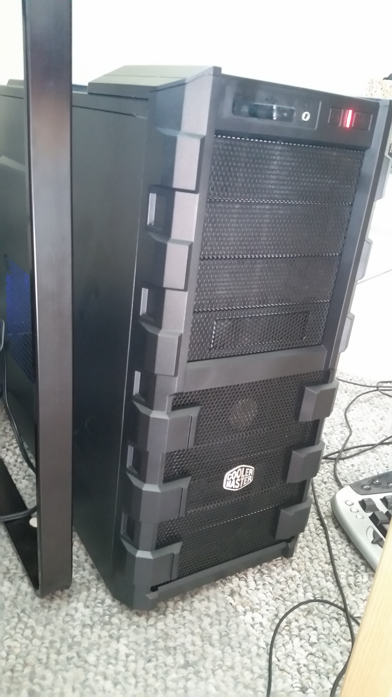
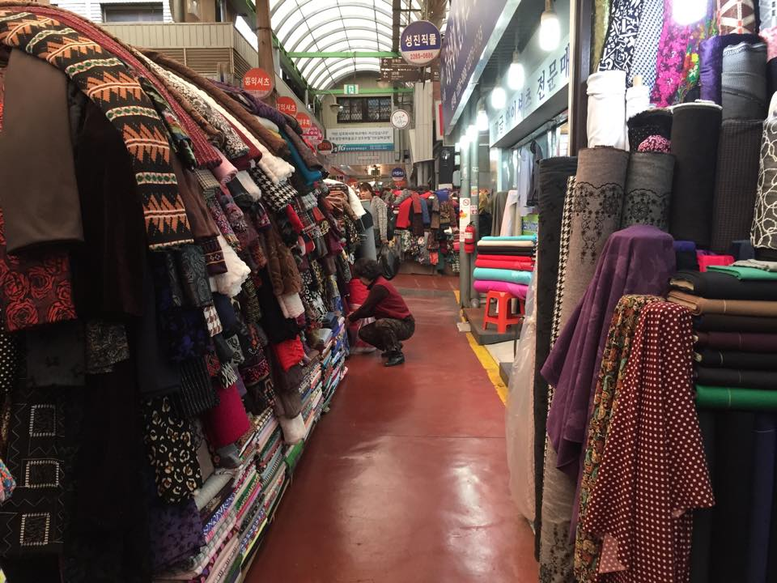

Let's Build Something Cool
From backend API work, automation and tools, to support forms, help centers, shopping carts and commission calculators, I've worked with some fantastic engineers to craft a wide variety of web products.
From being the first employee of a 3 person startup, to working with 6 different global offices within Tripadvisor Management Group, my experiences run the gamut of technology companies.
I even did a stint at a biotech startup in Shanghai right out of college (if you ever want to talk about monoclonal antibodies, or how insanely hard it is to change the name registered to your EIN, I'm your person!)
What I've Been Up To

Product Manager: Tripadvisor Listings & Geography/Customer Support
How do you identify all of the closed restaurants in the world? How do you design self-service features that help users help themselves? How do you leverage millions of mobile users to give you accurate, in destination information?
These are the kinds of questions I get to figure out the answers to on a day-to-day basis.

Building Megatron
Building my dream computer up from components. Core i5 processor that I can overclock to 5gh, OS mounted on solid state drive, 1T optical hard drive, Radeon R9 380 Video Card,24 gigs ram, 2x 24" monitors.

Exploring Brazil
A week in Rio (Ipanema) and a few days in Sao Paulo, and only one incident of getting trapped in an elevator with no cell reception (Fun fact "Socorro"is how you say "Help" in portugese)

Visiting Tripadvisor's London Office
Just in time for some Holiday Party bonding with the incredible UK Customer Support team :-)

Running Around Seoul
Because when MIT sends your boyfriend to a conference in South Korea, you absolutely hitch a ride.
Ahhhh Startup Life
It was an incredible ride while it lasted. I think you bond with a startup team more deeply than anyone else in your career.
Dog Fostering

Cat Fostering

Cambridge Innovation Center: Setting up an office for biotech startup
The stocked kitchen at CIC really takes the edge off dealing with lawyers and insurance and payroll!

Horseback riding up to the Great Wall of China
And subsequent walking around on an abandoned part of the Great Wall.

A rapid but beautiful blur of 4 years of the firehose
Mostly Economics and Neuroscience, but no one can escape Physics,Calc,Chem and Bio :-P

{kind=link}
{kind=link}
{kind=link}
{kind=link}